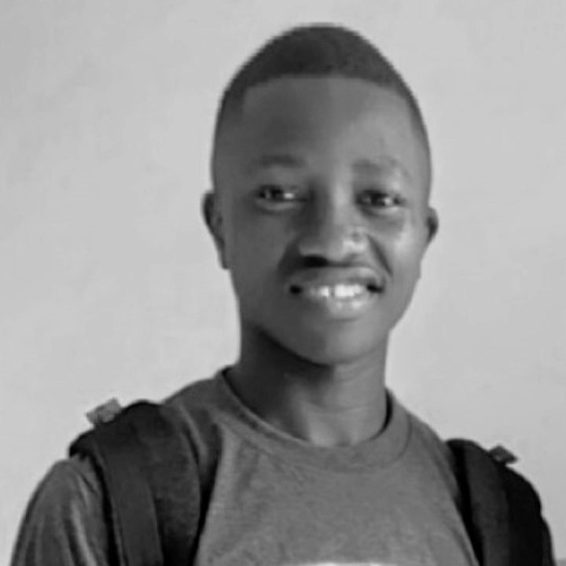

Présentation
Moi, c’est Félix Aimé Henmèni LAMAH, étudiant en Informatique à l'Institut Polytechnique de l'Université Gamal Abdel Nasser de Conakry.
Bienvenue sur mon site web personnel.
Je suis un jeune passionné par le développement web et la création de sites innovants. Mon parcours professionnel et mon engagement moral se reflètent dans mes compétences techniques ainsi que dans mes valeurs d’intégrité, de collaboration et créativité. En tant que développeur web, je suis habile à créer des sites web interactifs, attrayants et esthétiquement plaisants en utilisant une combinaison de langages de programmation tels que HTML, CSS et JavaScript, mais aussi avec le CMS WordPress. Ma passion pour le design me permet d’apporter une attention particulière aux détails visuels tout en assurant une expérience utilisateur optimale intuitive. Ma capacité à résoudre des problèmes de manière efficace et innovante, combinée à ma curiosité naturelle de nouvelles technologies, me permettent de rester constamment à jour avec les nouvelles tendances et pratiques de développement web. Je suis également capable de travailler de manière autonome ou en équipe, mettant en avant ma capacité à communiquer efficacement et à collaborer avec mes pairs pour atteindre des objectifs communs. En dehors du monde professionnel, je m’engage à respecter les normes éthiques élevées et à promouvoir des valeurs de diversité et de responsabilité sociale. Mon intégrité personnelle guide mes actions, et je m’efforce toujours de faire preuve d’honnêteté et de transparence dans tout ce que je fais. En résumé, en tant que developpeur web, designer et passionné du numérique, je mets en avant mes compétences techniques, ma créativité et mes valeurs morales pour contribuer de manière positive au monde numérique en constante évolution.
À travers ce portfolio, je souhaite partager mes compétences, mes projets et mes centres d'intérêt. Explorez et n'hésitez pas à me contacter pour toute collaboration ou projet futur.